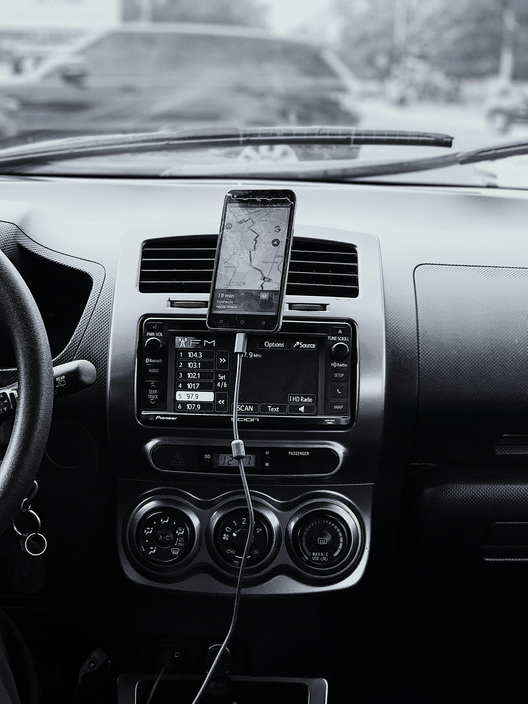
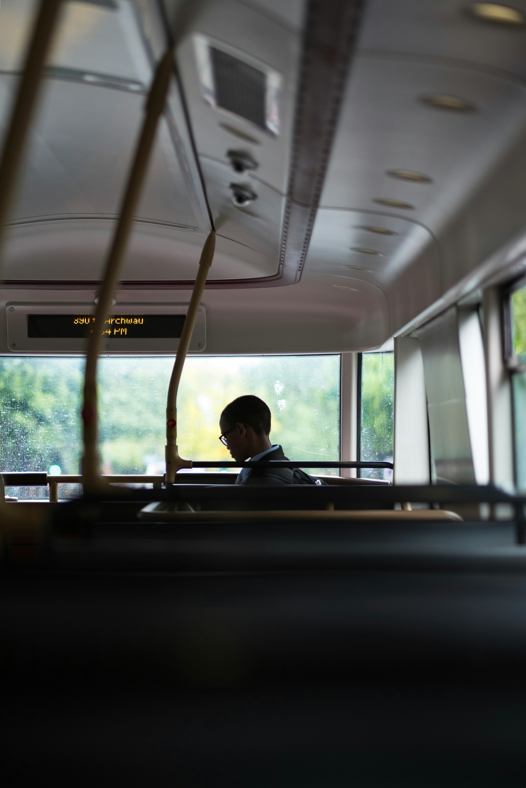

Our Solution: Real-Time Bus Tracking
Discover how real-time bus tracking can revolutionize public transportation by reducing wait times and improving route efficiency. Stay updated with accurate bus locations and arrival times for a smoother commute.

GPS Tracking BusTracking utilizes advanced GPS technology to continuously monitor the location and movement of buses in real-time.

Passengers can access bus locations and arrival times directly through a user-friendly mobile application, fare, empowering them to plan their commute effectively.